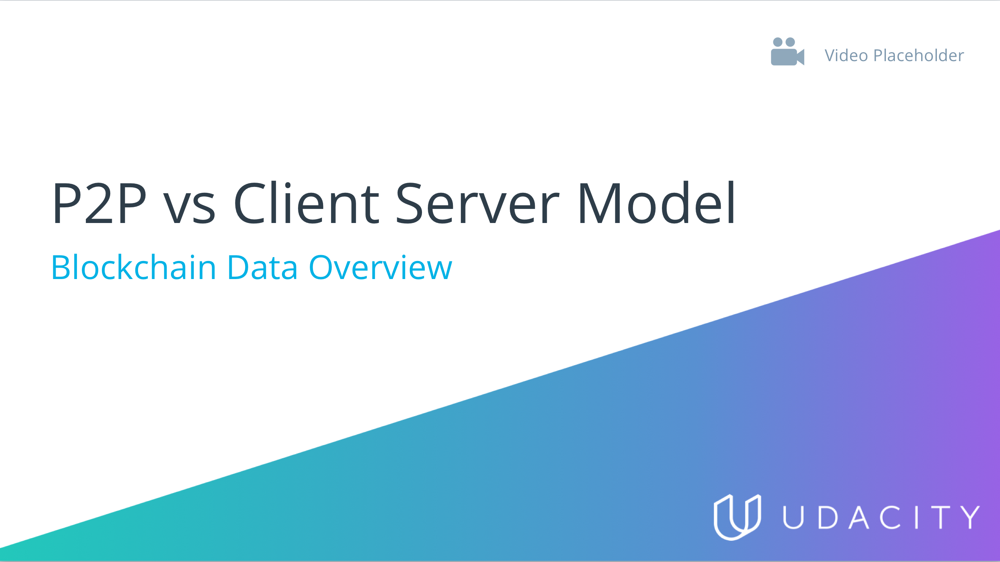

You’d like to have control over the information of the database so that you can easily assign permissions to different users. Which model should you use?
P2P Network
Client-Server Model
You need a network that is very stable and you need control to either add or remove computation and storage depending on the clients. Which model should you use?
Security is important, but you do not want a central authority controlling permissions across the network. Which model should you use?
You want a model where decisions are made by nodes in the network as opposed to central entities. Which model should you use?
A large movie streaming site owns many servers to ensure if one of the servers fails, there are other servers on which to fall back on so the information is not lost. Which model does this describe?
Next Concept